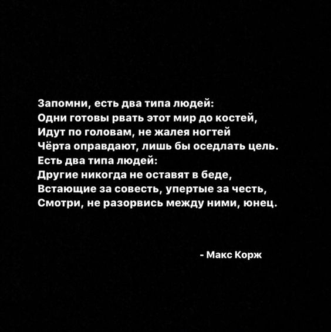

Tallinna päevaga tähistatakse tänavu 776 aasta möödumist
Lübecki linnaõiguse saamisest. Pidustused algasid 15. mail
ning kulmineeruvad laupäeval, 18. mail mitme suure sündmusega.
Toimub tänavafestival Ghetto Games, taaskasutusfestival UK Fest,
kontsert-etendus „Mitmenäoline linn“ ja palju muud.
Esmakordselt peetakse Tallinna päeva raames ka Tallinna ööd.
